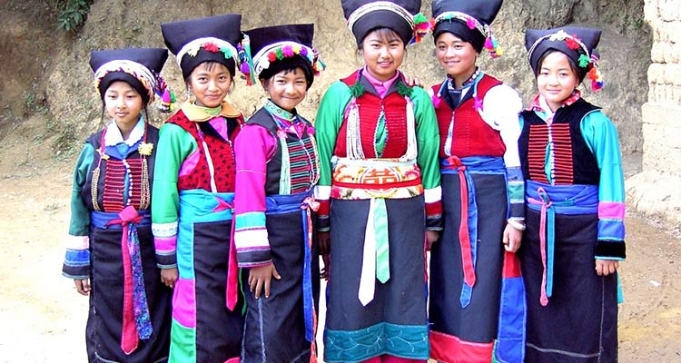
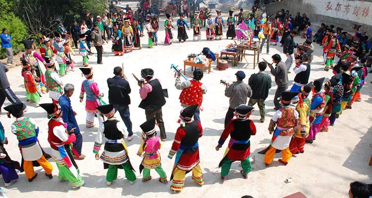

春天的太阳总是充满了元气的力量，而这份暖人的力量自然会受到人们的崇拜。五月初五端午节、三月十九太阳会，这些节日都是对这颗冉冉不绝散发光芒的恒星的崇拜。不过说到节日，自然而然少不了少数民族同胞们自己的节日。比如说布朗族的厚南节，就也是源自于对太阳的崇拜。
对于布朗族而言，过年节即“厚南节”，布朗族用傣语叫“京比迈”，是布朗人最隆重的节日，在农历清明后十日左右举行。这一天，家家户户吃红糖糯米粑粑，还要用芭蕉叶包成两份，各插上一对蜡条，两朵鲜花，送到家族长家中。各户男家长都要脱下自己的包头巾，向作为整个“嘎滚”(家族)代表的家族长行拜年磕头礼。
在厚南节这一天，大家也会用水象征性地从头到脚为家族长做洗礼，祝贺长命百岁，吉祥平安。家族长也为全族的大人孩子祝福、赐福。然后，家族长代表全族向“胎嘎滚”(家族神)进行祈祷祭祀。最后，整个村寨以家庭为单位，再到寨子西边日落的方向，举行滴水仪式，祈求风调雨顺，人畜平安。
1、《太阳的后裔》都这么火，一起来享受春日阳光的温暖可好？
2、你的印象里还有哪些关于太阳的节日呢？